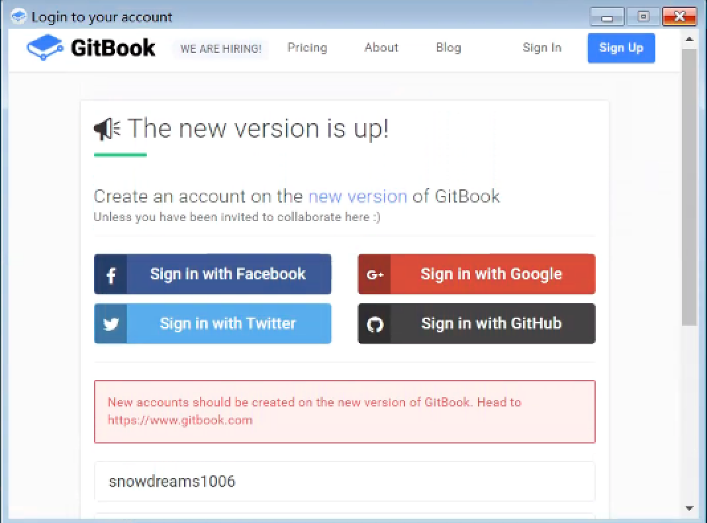

1. gitbook-editor 编辑器操作
亲测,目前已不再支持旧版 gitbook-editor 编辑器,而官网也没有相应的新版编辑器,如果哪位找到了新版编辑器,还望告知!

现在注册 gitbook 账号会默认重定向到 新版官网,而 旧版官网 的账号应该是可以正常使用的,前提是你必须之前注册过.
遗憾的是,最新注册的账号是无法使用 gitbook-editor 编辑器,不能登录到 gitbook ,也无法同步 github ,充其量只能算本地的 markdown 编辑器,所以这一节不再介绍了.
如果有兴趣了解 gitbook-editor 编辑器的基本使用,请参考 gitbook editor 编辑器.